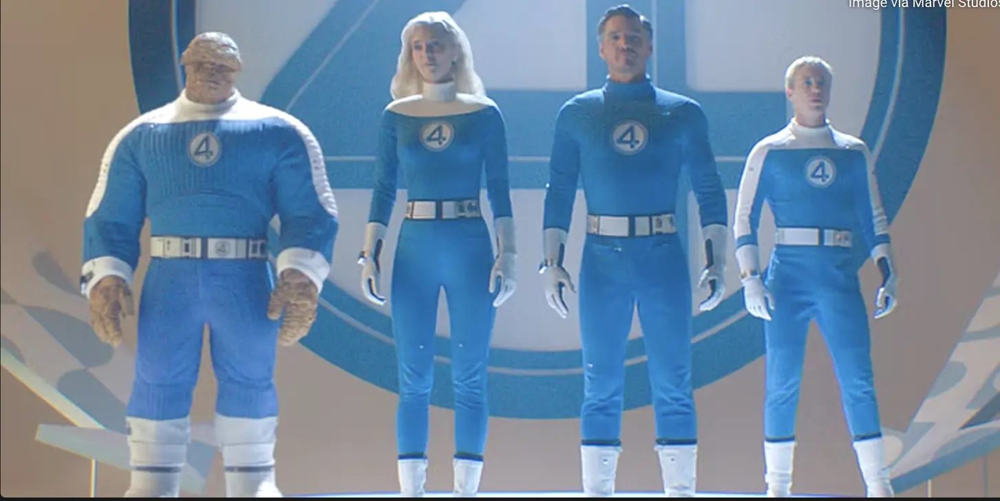
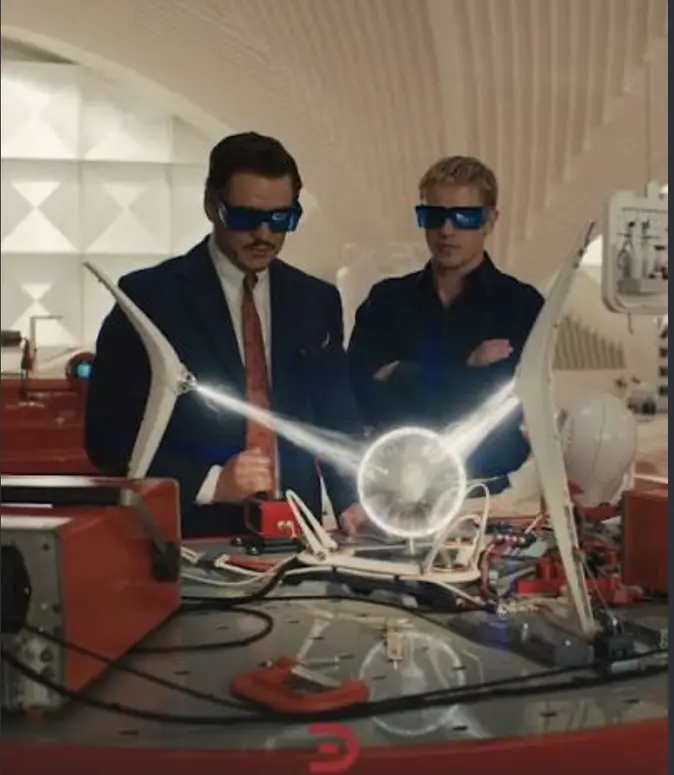
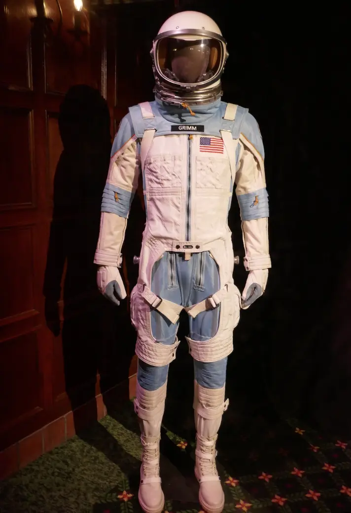
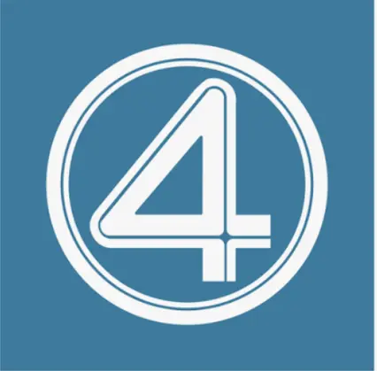
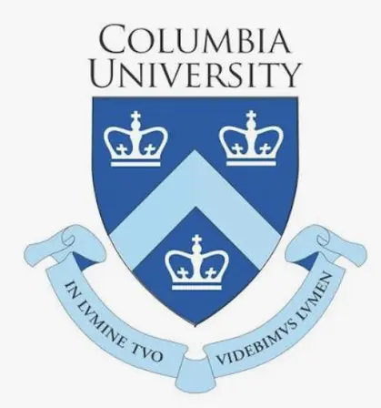

Dr.Reed Richards
Theoretical Physicist | Applied Mathematician | Founder & Director, The Fantastic Four & Future Foundation
Baxter Building,New York Metropolitan Area, NY,USA
830,100 followers
About
Polymath and theoretical physicist specializing in multi-dimensional field equations, quantum mechanics, subatomic energy dynamics, and trans-dimensional exploration. Committed to expanding human knowledge through rigorous scientific inquiry and developing transformative technology to solve humanity's greatest existential challenges. Founder of the Future Foundation, a think tank dedicated to empowering the next generation of global innovators, researchers, and scientific leaders.
Featured
The World Peace & Global Sustainability Protocol
Future Foundation Research Initiative
Developed a planetary resource distribution algorithm and clean-energy framework designed to eradicate poverty-driven conflict and establish permanent world peace. By combining orbital weather regulation with zero-point energy grids, this project aims to create a sustainable, post-scarcity global society.
Trans-Dimensional Sub-Space Mapping

The Fantastic Four Operations
Engineered stable bridge portals to map adjacent dimensional spaces and extragalactic coordinates, providing crucial early-detection telemetric data for cosmic anomalies and safeguarding Earth's biosphere.
Adaptive Unstable-Molecule Technology

Interdisciplinary Applied Physics
Synthesized dynamic textile and structural materials capable of real-time molecular adaptation under extreme thermal, kinetic, and radiation stress, currently deployed in extreme-environment exploration suits.
Activity
Dr.Reed Richards
2 week ago 🌏
A quick note to all Future Foundation fellows: please ensure all portal generators are fully powered down and recalibrated after sub-space simulation runs. Precision is the foundation of progress.
98,420 reactions • 8,150 comments • 5,200 reposts
Dr.Reed Richards
6 mo ago 🌏
Delighted to share our latest paper on unstable-molecule thermodynamics and multi-phasic field stabilization! By applying non-Euclidean geometry to kinetic energy dispersion, we are opening new possibilities for adaptive structural materials. Science is infinite—keep exploring. ⚛️🔬

78,410 reactions • 6,130 comments • 8,300 reposts
Dr.Reed Richards
2 yr ago 🌏
Delighted to announce that the Future Foundation has officially opened applications for our annual Global Young Innovators Grant! This year, we are allocating $50M in non-dilutive research funding across quantum computing, sustainable bio-engineering, and clean energy grid design. If you are a young researcher, student, or team working to solve fundamental global challenges, we want to support your vision. Progress belongs to those willing to ask the biggest questions. Apply via the Future Foundation portal! ⚛️🚀
182,490 reactions • 12,430 comments • 4,190 reposts
See More ➡
Experience
Founder & Lead Director
Future Foundation • Full-time
New York, NY

Director of Scientific Operations & Core Founder
The Fantastic Four • Full-time
1960-Present
Director of Advanced Material Research
Baxter Foundation for Applied Science • Full-time
1950-1960
Education

Columbia University
Doctor of Philosophy (Ph.D.), Mathematics
Activities and societies: Gamma Radiation Research Group, Advanced Theoretical Physics Society

California Institute of Technology (Caltech)
Doctor of Philosophy (Ph.D.), Aerospace & Mechanical Engineering
National Academic Decathlon Championship, Caltech Science Excellence Award